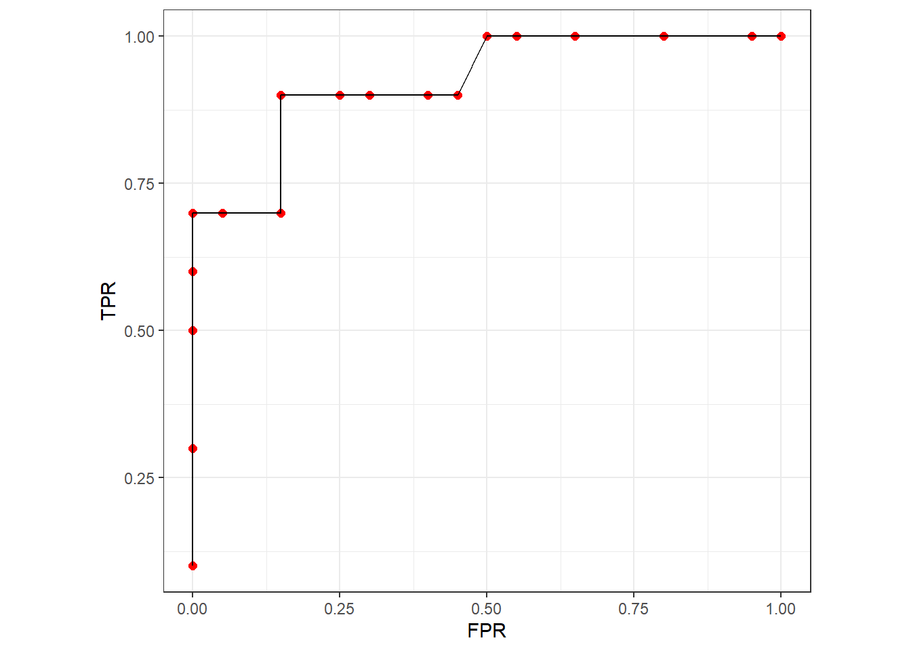

29 ROC曲线ggplot2绘制
下面我们纯手工计算真阳性率/假阳性率，并使用ggplot2手动画一个ROC曲线。
29.1 准备数据
假如，我想根据ca125的值判定一个人到底有没有肿瘤，找了10个肿瘤患者，20个非肿瘤患者，都给他们测一下ca125，这样就得到了30个ca125的值。
set.seed(20220840)
ca125_1 <- c(rnorm(10,80,20),rnorm(20,50,10))
# 30个人的ca125的值如下
ca125_1
## [1] 51.88470 82.45907 113.66834 63.49476 98.29077 63.27374 74.25079
## [8] 80.22945 83.01740 99.17105 42.52889 54.56804 48.88383 65.67865
## [15] 44.73153 45.99028 55.82554 42.79242 60.84917 64.80764 51.11468
## [22] 43.40118 47.03850 44.75943 68.34163 60.83829 53.32599 59.92225
## [29] 46.46360 30.02914假定前10个人是肿瘤，后20个人是非肿瘤。
outcome <- c(rep(c("肿瘤","非肿瘤"),c(10,20)))
outcome
## [1] "肿瘤" "肿瘤" "肿瘤" "肿瘤" "肿瘤" "肿瘤" "肿瘤" "肿瘤"
## [9] "肿瘤" "肿瘤" "非肿瘤" "非肿瘤" "非肿瘤" "非肿瘤" "非肿瘤" "非肿瘤"
## [17] "非肿瘤" "非肿瘤" "非肿瘤" "非肿瘤" "非肿瘤" "非肿瘤" "非肿瘤" "非肿瘤"
## [25] "非肿瘤" "非肿瘤" "非肿瘤" "非肿瘤" "非肿瘤" "非肿瘤"
df <- data.frame(`outcome`=outcome,
`ca125`=ca125_1
)
psych::headTail(df)
## outcome ca125
## 1 肿瘤 51.88
## 2 肿瘤 82.46
## 3 肿瘤 113.67
## 4 肿瘤 63.49
## ... <NA> ...
## 27 非肿瘤 53.33
## 28 非肿瘤 59.92
## 29 非肿瘤 46.46
## 30 非肿瘤 30.03现在如果我们设置ca125>60，判断为肿瘤，ca125≤50判断为非肿瘤，就能得到如下的结果：
df1 <- transform(df, pred = ifelse(ca125>60,"猜他是肿瘤","猜他不是肿瘤"))
psych::headTail(df1)
## outcome ca125 pred
## 1 肿瘤 51.88 猜他不是肿瘤
## 2 肿瘤 82.46 猜他是肿瘤
## 3 肿瘤 113.67 猜他是肿瘤
## 4 肿瘤 63.49 猜他是肿瘤
## ... <NA> ... <NA>
## 27 非肿瘤 53.33 猜他不是肿瘤
## 28 非肿瘤 59.92 猜他不是肿瘤
## 29 非肿瘤 46.46 猜他不是肿瘤
## 30 非肿瘤 30.03 猜他不是肿瘤这样就能得出一个四格表：
xtabs(~outcome+pred,data = df1)
## pred
## outcome 猜他不是肿瘤 猜他是肿瘤
## 非肿瘤 15 5
## 肿瘤 1 9根据这个四格表我们就能算出目前的真阳性率和假阳性率：
真阳性率：猜他是肿瘤的人数 / 所有肿瘤人数 假阳性率：猜他是肿瘤的人数 / 所有非肿瘤人数
真阳性率 = 9 / (1+9) = 0.9 假阳性率 = 5 / (15+5) = 0.25
一个阈值就能算出1个真阳性率和假阳性率，多找几个阈值就能算出多个率，把这些率画在坐标轴里，再连成线，就是ROC曲线了。
29.2 计算
我们可以编写一个函数，帮我们计算真阳性率和假阳性率，这段函数参考了知乎张敬信老师的文章。
cal_ROC <- function(df, cutoff){
df <- transform(df, pred = ifelse(ca125>cutoff,"猜他是肿瘤","猜他不是肿瘤"))
cm <- table(df$outcome,df$pred)
t <- cm[,"猜他是肿瘤"]/rowSums(cm)
list(TPR=t[[2]], FPR=t[[1]])
}阈值设置为60，看看是不是和我们上面的结果一样：
cal_ROC(df,60)
## $TPR
## [1] 0.9
##
## $FPR
## [1] 0.25可以看到是一样的哦~
下面就是自己选择多个阈值进行计算，先看下ca125的范围，超出这个范围的阈值没有意义~
range(ca125_1)
## [1] 30.02914 113.66834计算：
29.3 画图
library(ggplot2)
ggplot(rocs, aes(FPR,TPR))+
geom_point(size=2,color="red")+
geom_path()+
coord_fixed()+
theme_bw()
这就是一个简单的ROC曲线的手工画法~